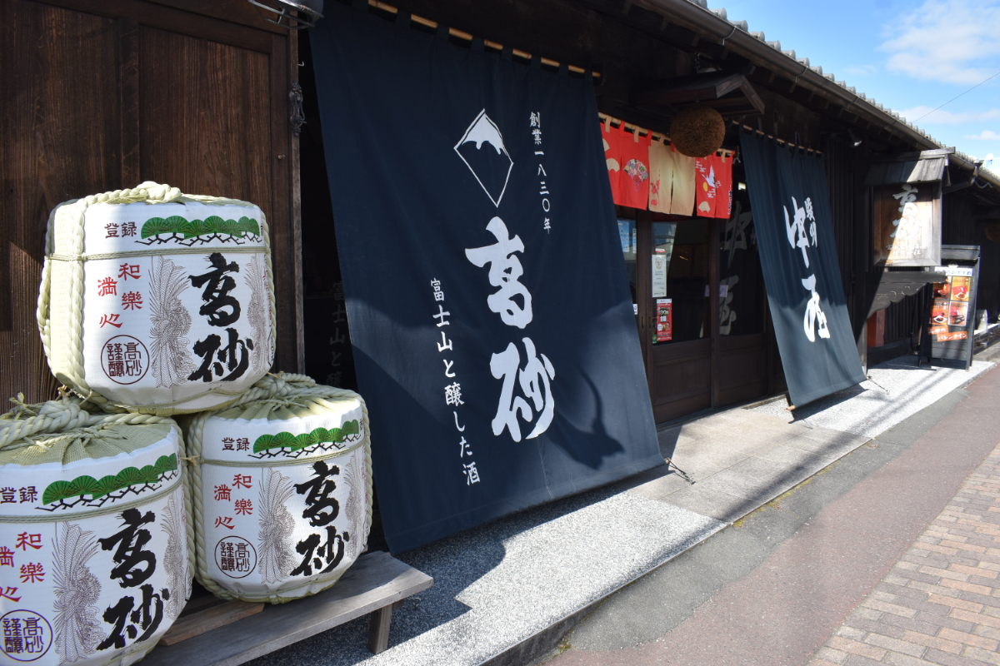

こだわりとであう -01
水と共に生きる職人を訪ねる

▲ 富士高砂酒造の外観。2月の完成された杉玉が店前にある。
富士宮の水と共に切磋琢磨する職人の皆様に、水や仕事へのこだわりを伺いました。

富士高砂酒造
製品部 酒造課 小口 和彦さん
私たちの作るお酒の水は、28mの浅井戸から汲み上げた富士山の伏流水です。水道水より厳しい基準の水質検査を毎年行っておりますが、とても綺麗なのでごみを取るだけで使用できますよ。洗米や蒸米の蒸気、勿論お酒にも使われます。お酒の約80％は水ですからね。お米1tに対し1300Lの水をホースで存分に洗米できますし、使用される水の量は年間約800m³にもなります。他の酒造から見れば、とても贅沢な光景だと思います。
ビールやワインが主流となる外国は硬水が多く、日本に多い軟水は飲みやすいとされています。その中でも富士山の伏流水は超軟水であり、発酵力が弱いため優しくほのかにお酒ができます。ワインで使用される葡萄は品種改良次第で様々な味が出ますが、お米は開発に10~20年かかる為日本酒は変化が大人しいのが特徴です。素材ではアピールできる点が少なく、職人の技術や伝統的な製法ありきでこの味が完成されています。
酵母の絶妙な具合や鉄も成分に影響してしまうので、使用する道具は全てステンレスやアルミ製でできており、少しの気の緩みも許されません。ゆっくり丁寧にお米に水を含ませ作り上げる、この富士の水あってこその酒造りです。
Page.01 ＞